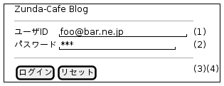
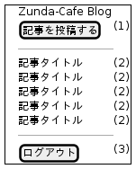
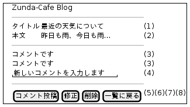
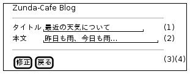
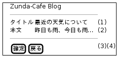
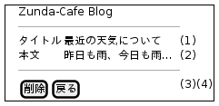

画面一覧¶
| No | ユースケースグループ名 | ユースケース名 | 画面ID | 画面名 | 説明 | 備考 |
|---|---|---|---|---|---|---|
| 1 | ログイン | ログインする | A101 | ログイン画面 | ログインする画面 | |
| 2 | 記事閲覧 | 記事を閲覧する | B101 | 記事一覧画面 | 全ての記事のタイトルを表示する画面 | |
| 3 | 記事閲覧、コメント投稿 | 記事を閲覧する、コメントを投稿する | B102 | 記事詳細画面 | 特定の記事の本文やコメントを表示、コメントを投稿する画面 | |
| 4 | 記事投稿 | 記事を投稿する | C101 | 記事投稿画面 | 投稿する記事を入力する画面 | |
| 5 | 記事投稿 | 記事を投稿する | C102 | 記事投稿確認画面 | 投稿する記事を確認する画面 | |
| 6 | 記事修正 | 記事を修正する | D101 | 記事修正画面 | 既存の記事を修正する画面 | |
| 7 | 記事修正 | 記事を修正する | D102 | 記事修正確認画面 | 記事の修正を確認する画面 | |
| 8 | 記事削除 | 記事を削除する | E101 | 記事削除確認画面 | 既存の記事を削除する画面 |
画面遷移図¶
![left to right direction
skinparam defaultFontName IPAGothic
A101 : ログイン画面
B101 : 記事一覧画面
B102 : 記事詳細画面
C101 : 記事投稿画面
C102 : 記事投稿確認画面
D101 : 記事修正画面
D102 : 記事修正確認画面
E101 : 記事削除確認画面
[*] --> A101
A101 --> B101 : ログイン
B101 --> B102 : 記事タイトル
B101 --> C101 : 記事を投稿する
C101 --> C102 : 投稿
C102 --> B101 : 確定
B102 --> D101 : 修正
D101 --> D102 : 修正
D102 --> B102 : 確定
B102 --> E101 : 削除
E101 --> B101 : 削除
B102 --> B102 : コメント投稿
B102 --> B101 : 一覧へ戻る
C101 --> B101 : 戻る
C102 --> C101 : 戻る
D101 --> B102 : 戻る
D102 --> D101 : 戻る
E101 --> B102 : 戻る
B101 --> B101 : ログアウト](../_images/plantuml-1e954471ee62cd2c107560ef69369f814b637419.png)
画面仕様¶
ログイン画面¶
| 画面ID: | A101 |
|---|---|
| 画面名: | ログイン画面 |

| No | 論理項目名 | 論理項目種別 | 入力 | 出力 | 必須 | 桁最小 | 桁最大 | 文字種別 |
|---|---|---|---|---|---|---|---|---|
| 1 | ユーザID | テキストボックス | ○ | ー | ○ | 1 | 64 | 半角文字 |
| 2 | パスワード | テキストボックス | ○ | ー | ○ | 1 | 64 | 半角文字 |
| 3 | ログイン | ボタン | ー | ー | ー | ー | ー | ー |
| 4 | リセット | ボタン | ー | ー | ー | ー | ー | ー |
記事一覧画面¶
| 画面ID: | B101 |
|---|---|
| 画面名: | 記事一覧画面 |

| No | 論理項目名 | 論理項目種別 | 入力 | 出力 | 必須 | 桁最小 | 桁最大 | 文字種別 |
|---|---|---|---|---|---|---|---|---|
| 1 | 記事を投稿する | ボタン | ー | ー | ー | ー | ー | ー |
| 2 | 記事タイトル | リンク | ー | ○ | ー | ー | ー | ー |
| 3 | ログアウト | ボタン | ー | ー | ー | ー | ー | ー |
全ての記事の記事タイトルを表示する。
記事詳細画面¶
| 画面ID: | B102 |
|---|---|
| 画面名: | 記事詳細画面 |

| No | 論理項目名 | 論理項目種別 | 入力 | 出力 | 必須 | 桁最小 | 桁最大 | 文字種別 |
|---|---|---|---|---|---|---|---|---|
| 1 | 記事タイトル | テキスト | ー | ○ | ー | ー | ー | ー |
| 2 | 記事本文 | テキスト | ー | ○ | ー | ー | ー | ー |
| 3 | コメント | テキスト | ー | ○ | ー | ー | ー | ー |
| 4 | 新規コメント | テキストエリア | ○ | ー | ー | 1 | 1024 | ー |
| 5 | コメント投稿 | ボタン | ー | ー | ー | ー | ー | ー |
| 6 | 修正 | ボタン | ー | ー | ー | ー | ー | ー |
| 7 | 削除 | ボタン | ー | ー | ー | ー | ー | ー |
| 8 | 一覧に戻る | ボタン | ー | ー | ー | ー | ー | ー |
「修正」「削除」ボタンはログインユーザが投稿した記事の場合のみ表示する。
記事投稿画面¶
| 画面ID: | C101 |
|---|---|
| 画面名: | 記事投稿画面 |
| No | 論理項目名 | 論理項目種別 | 入力 | 出力 | 必須 | 桁最小 | 桁最大 | 文字種別 |
|---|---|---|---|---|---|---|---|---|
| 1 | 記事タイトル | テキストボックス | ○ | ー | ○ | 1 | 64 | ー |
| 2 | 記事本文 | テキストエリア | ○ | ー | ○ | 1 | 1024 | ー |
| 3 | 投稿 | ボタン | ー | ー | ー | ー | ー | ー |
| 4 | 戻る | ボタン | ー | ー | ー | ー | ー | ー |
記事修正画面¶
| 画面ID: | D101 |
|---|---|
| 画面名: | 記事修正画面 |

| No | 論理項目名 | 論理項目種別 | 入力 | 出力 | 必須 | 桁最小 | 桁最大 | 文字種別 |
|---|---|---|---|---|---|---|---|---|
| 1 | 記事タイトル | テキストボックス | ○ | ○ | ○ | 1 | 64 | ー |
| 2 | 記事本文 | テキストエリア | ○ | ○ | ○ | 1 | 1024 | ー |
| 3 | 修正 | ボタン | ー | ー | ー | ー | ー | ー |
| 4 | 戻る | ボタン | ー | ー | ー | ー | ー | ー |
記事修正確認画面¶
| 画面ID: | D102 |
|---|---|
| 画面名: | 記事修正確認画面 |

| No | 論理項目名 | 論理項目種別 | 入力 | 出力 | 必須 | 桁最小 | 桁最大 | 文字種別 |
|---|---|---|---|---|---|---|---|---|
| 1 | 記事タイトル | テキスト | ー | ○ | ー | ー | ー | ー |
| 2 | 記事本文 | テキスト | ー | ○ | ー | ー | ー | ー |
| 3 | 確定 | ボタン | ー | ー | ー | ー | ー | ー |
| 4 | 戻る | ボタン | ー | ー | ー | ー | ー | ー |
記事削除確認画面¶
| 画面ID: | E101 |
|---|---|
| 画面名: | 記事削除確認画面 |

| No | 論理項目名 | 論理項目種別 | 入力 | 出力 | 必須 | 桁最小 | 桁最大 | 文字種別 |
|---|---|---|---|---|---|---|---|---|
| 1 | 記事タイトル | テキスト | ー | ○ | ー | ー | ー | ー |
| 2 | 記事本文 | テキスト | ー | ○ | ー | ー | ー | ー |
| 3 | 削除 | ボタン | ー | ー | ー | ー | ー | ー |
| 4 | 戻る | ボタン | ー | ー | ー | ー | ー | ー |